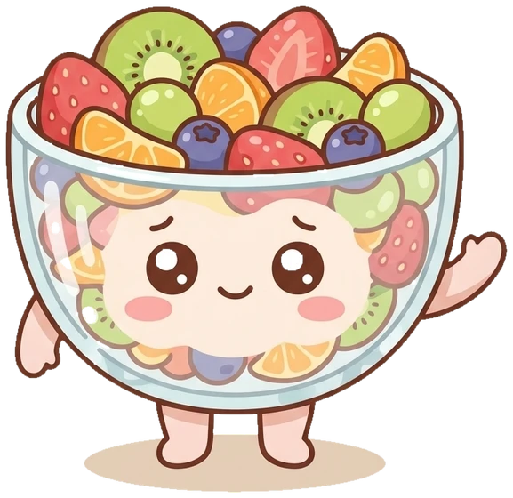

Shy Wave

The Wiggler
Tutti Frutti
A vibrant fruit salad, brand new to Sugar Valley and still learning English, who says the most important things with a wiggle, a wave, and a whole lot of heart.
“

A vibrant fruit salad, brand new to Sugar Valley and still learning English, who says the most important things with a wiggle, a wave, and a whole lot of heart.